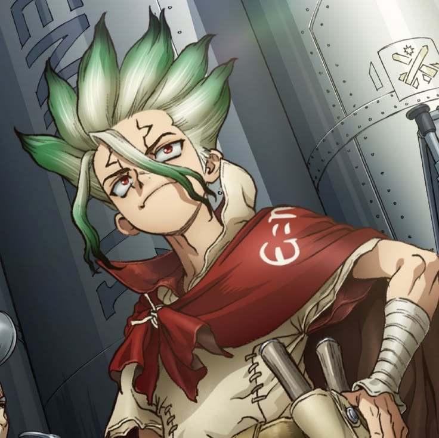
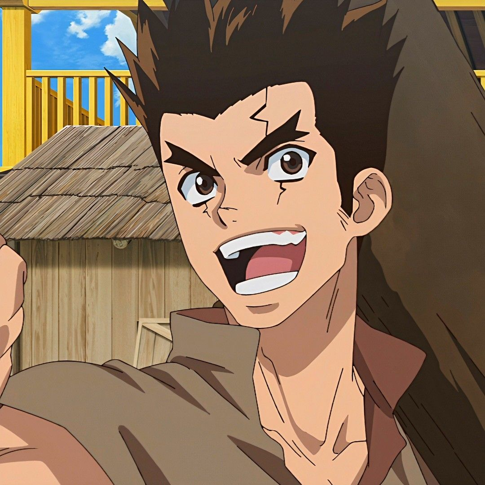
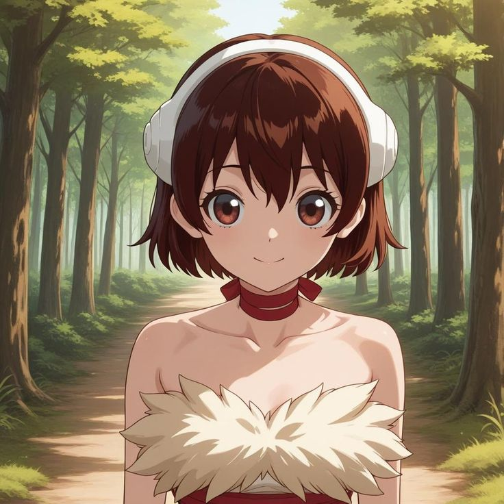
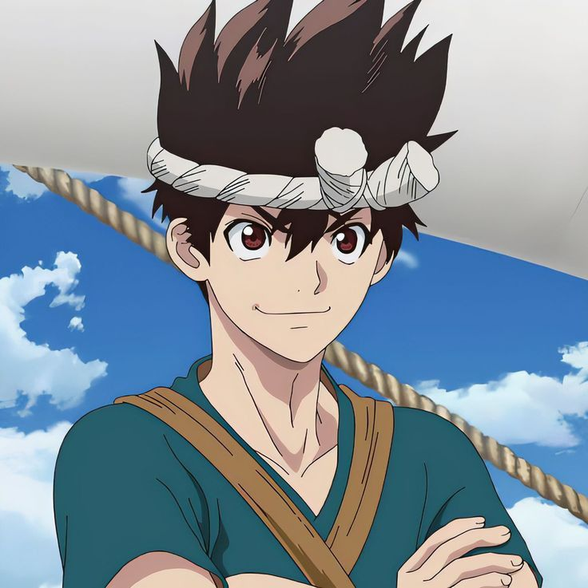
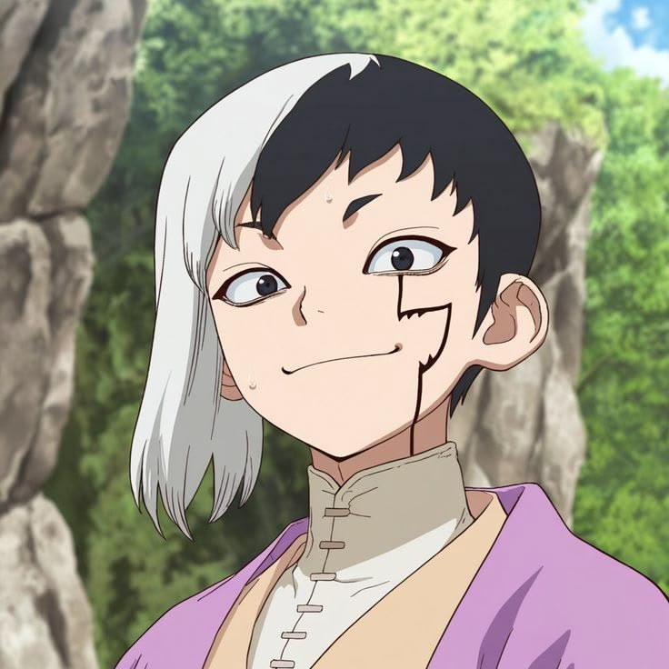
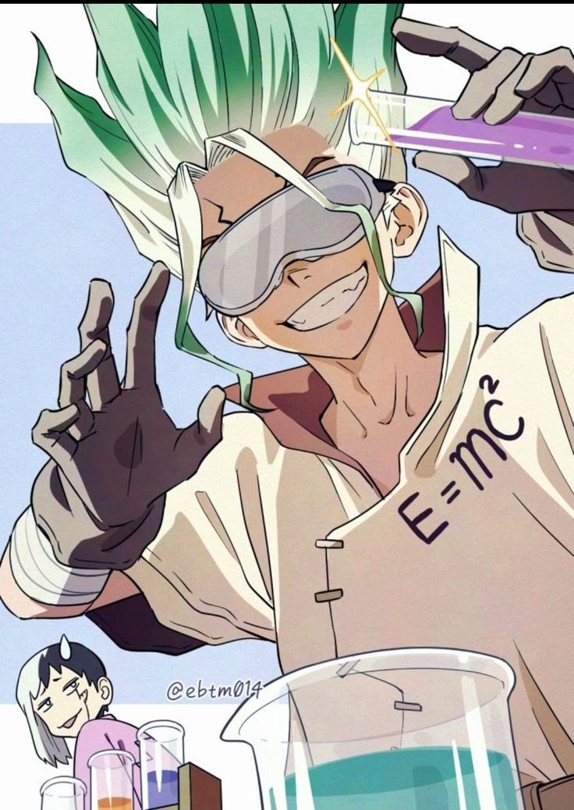
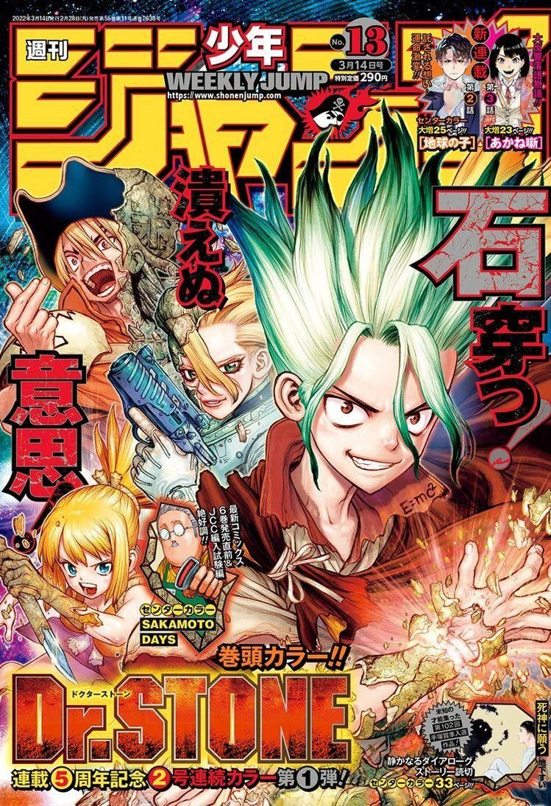
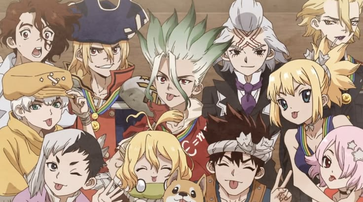

A QUICK LOOK
Thousands of years after a mysterious event turns every human to stone, Senku Ishigami wakes up in a world where civilization has disappeared.
Thousands of years after a mysterious event turns every human to stone, Senku Ishigami wakes up in a world where civilization has disappeared.
Instead of giving up, Senku decides to bring modern technology back—one experiment at a time. Chemistry, engineering, electricity, medicine: the Kingdom of Science has to figure out how to rebuild civilization with whatever it can find.
Thousands of years after a mysterious event turns every human to stone, Senku Ishigami wakes up in a world where civilization has disappeared.
Instead of giving up, Senku decides to bring modern technology back—one experiment at a time. Chemistry, engineering, electricity, medicine: the Kingdom of Science has to figure out how to rebuild civilization with whatever it can find.
The people who make the story what it is. Heroes, rivals, friends, and everyone in between.

The scientist determined to rebuild civilization.

Senku's loyal friend with incredible stamina.

A skilled craftsperson with a careful eye.

A village science enthusiast who joins Senku.
A strong fighter who becomes part of the Kingdom of Science.

A clever mentalist who knows how to read people.
A few pictures for official posters or fanarts.


